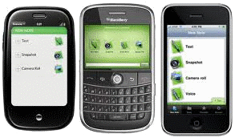

Gilbert 21 - using Evernote smart-phone apps
Evernote smart-phone apps can be used - in conjunction with Gilbert 21 - to make biological records in the field. Evernote smart-phone apps are free and can be obtained here. You will also need so sign up for a free Evernote account in order to be able to use the apps. The account gives you 'cloud' storage space for your notes which enables you to transfer notes between your apps and Gilbert 21.
Any note that you can make with an Evernote smart-phone app can be used as the basis for a biological record, whether it's a note based on an audio-recording, a photo or simply a text note.
The primary reason for developing a link with Evernote was to take advantage of its ability to make notes based on a voice recordings. By adding a short-cut to the Evernote's audio note facility on your home-screen (e.g. by using the Evernote Widget on Android phones), making an audio note with Evernote need take only one or two 'clicks'.
For Evernote notes to be really useful to you as the basis of biological records, you will want Evernote to use your phone's GPS capability to geotag the notes. Gilbert 21 can then assign and grid reference and location name based on that information. So when using Evernote in the field to make a biological record you must ensure that it connects to the GPS before you save the note - otherwise you may find that the location is incorrect when you import the note into Gilbert 21.
Making an audio note
Evernote apps for the different smart-phone platforms - iPhone, Android and Blackberry - may differ in the details of how you interact with them, but the general procedure will be the same. For example, on Android phones, you need to do the following to make an audio note which can be used as the basis for a biological record in Gilbert 21:
You should consult your phone's manual to learn how it indicates to you that it has a GPS fix.
Note that it is possible to click the 'Done' button directly to end the recording and save the note - i.e. without clicking the recording end button - but you should only do this if the phone is indicating that it has obtained a GPS fix.
Once your smart-phone Evernote app has synchronised with the 'cloud' you will able to make biological records from Evernote notes.
Using other types of Evernote note
If you create an Evernote note with a photo, Gilbert 21 will download the photo attachment from the cloud and use this as a linked photo - placing it on the Media tab of the Record Properties form. Note that photos associated with Evernote notes - like the voice recordings - are downloaded to the folder indicated by your Gilbert 21 options. If you later move or delete photos from this folder, Gilbert 21 will not be able to display the image unless you use the Record Properties form to re-locate the image. (Alternatively you can tell Gilbert 21 to store the image in it's database and then it doesn't matter if you delete or move the original image. But this increases the size of your database.)
You can just create simple text notes by typing. When you import the record into Gilbert 21, the title of the note will be used to populate the 'Common name' field of the record and anything you type into the body of the note will be used to initialise the 'Comments' field of the record. If you type a vernacular name as a note title which matches a vernacular name in Gilbert 21's convenience taxon dictionary (drop-down list) when you import the record, the Record Properties dialog will automatically match it and populate the relevant fields with the associated scientific name and taxon group.
Created with the Personal Edition of HelpNDoc: Easily create Help documents